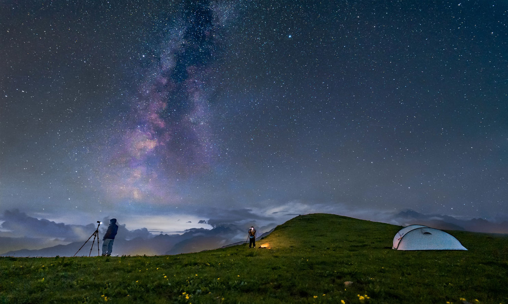

I never dreamed about success, I worked for it.
나는 결코 성공에 대해 꿈꾸지 않았다, 나는 행동했다.
I never dreamed about success, I worked for it.
나는 결코 성공에 대해 꿈꾸지 않았다, 나는 행동했다.
마우스 이펙트 - 마우스 방향에 따라 움직이기
<!--contents -->
<main>
<div class="cursor"></div>
<div class="moveWrap">
<article class="moveImage">
<div class="mImg"><img src="../assets/img/bg7@X2.jpg" alt="이미지"></div>
<div class="mText">
<p>I never dreamed about success, I worked for it.</p>
<p>나는 결코 성공에 대해 꿈꾸지 않았다, 나는 행동했다.</p>
</div>
</article>
</div>
</main>
<!--// contents-->
<div class="info left list">
<ul>
<li>pageX : <span class="pageX">0</span></li>
<li>pageY : <span class="pageY">0</span></li>
<li>standardX : <span class="standardX">0</span></li>
<li>standardY : <span class="standardY">0</span></li>
<li>maxX : <span class="maxX">0</span></li>
<li>maxY : <span class="maxY">0</span></li>
<li>angleX : <span class="angleX">0</span></li>
<li>angleY : <span class="angleY">0</span></li>
</ul>
</div>
body {
cursor: none;
width: 100%;
height: 100vh;
overflow: hidden;
}
.moveWrap {
width: 100%;
height: 100vh;
overflow: hidden;
}
.moveImage {
position: absolute;
left: 50%; top: 50%;
transform: translate(-50%, -50%) perspective(600px) rotateX(0deg) rotateY(0deg);
transform-style: preserve-3d;
will-change: transform;
transition: all 0.2s;
}
.moveImage .mImg {
width: 60vw;
position: relative;
}
.moveImage .mImg::before {
content: '';
position: absolute;
left: 5%; bottom: -3%;
width: 90%; height: 40px;
background: url(../assets/img/bg7@X2.jpg) no-repeat;
background-size: 100% 30px;
filter: blur(15px);
z-index: -1;
opacity: 0.9;
}
.moveImage .mImg img{
width: 100%;
border-radius: 5px;
}
.moveImage .mText{
font-family: 'NEXONLv1Gothic';
position: absolute;
left: 50%; top: 50%;
transform: translate3d(-50%, -50%, 150px);
text-align: center;
color: #fff;
background: rgba(0,0,0,.3);
padding: 2vw;
font-size: 1vw;
white-space: nowrap;
line-height: 1.6;
border-radius: 5px;
}
.cursor {
position: absolute;
width: 10px;height: 10px;
background: #fff;
border-radius: 50%;
z-index: 10000;
user-select: none;
pointer-events: none;
}
$(window).mousemove(function(e){
let pageX = e.pageX;
let pageY = e.pageY;
//마우스 기준점을 가운데로 변경하려고 브라우저 가로값-페이지x값
//브라우저 세로 - 페이지y값 하면 마우스가 중앙에가면 (0,0)이됨
let standardX = $(window).width()/2 - pageX;
let standardY = $(window).height()/2 - pageY;
//최대값, 최소값 설정(각도 몇 이상 이면 더이상 돌아가지않게)
//if(standardX >= 50) standardX = 50
//if(standardX <= -50) standardX = -50
//if(standardY >= 50) standardY = 50
//if(standardY <= -50) standardY = -50
//최소값은 -100, 최대값은 100이 되는거래
//max(최소값(-50이하로 아내려가게), min(50, x값이 100이되면 50이 안넘게))
let maxX = Math.max(-100, Math.min(100, standardX));
let maxY = Math.max(-100, Math.min(100, standardY));
//각도를 줄이기 위해서 angle
let angleX = maxX * 0.1;
let angleY = maxY * 0.1;
//부드럽게 설정
let softX = 0;
let softY = 0;
softX += (angleX - softX) * 0.6;
softY += (angleY - softY) * 0.6;
//이미지
$(".moveImage").css({"transform" : "translate(-50%, -50%) perspective(600px) rotateX("+ softY +"deg) rotateY("+ -softX +"deg)"});
//커서
gsap.to(".cursor", {duration: .3, left: pageX, top: pageY});
//출력
$(".pageX").text(pageX)
$(".pageY").text(pageY)
$(".standardX").text(standardX)
$(".standardY").text(standardY)
$(".maxX").text(maxX)
$(".maxY").text(maxY)
$(".angleX").text(parseInt(angleX))
$(".angleY").text(parseInt(angleY))
});